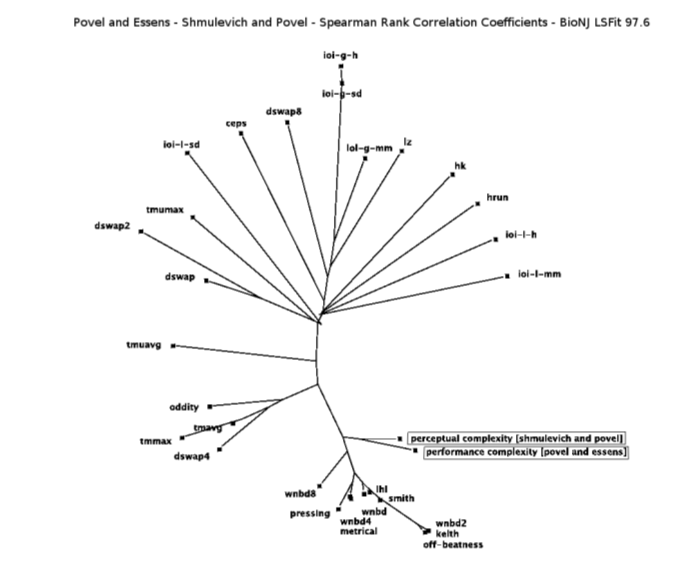
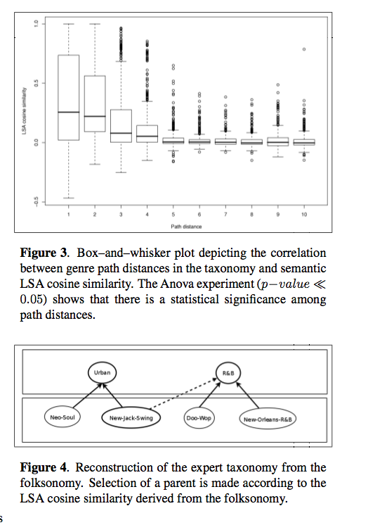

ISMIR Day 4
Plenary Session 7: Melody and Rhythm
Melody Expectation Method Based on GTTM and TPS
Masatoshi Hamanaka, Keiji Hirata and Satoshi TojoA method that predicts the next notes is described for assisting musical novices to play improvisations. The system can predict the candidate next notes not only from the surface structure of the melody but also from the deeper structure of the melody acquired by the generative theory of tonal music (GTTM) and tonal pitch space (TPS) analysis. Experimental results showed that the method can evaluate the appropriateness of the melody sufficiently well.

Rhythm Complexity Measures: A Comparison of Mathematical Models of Human Perception and Performance
Eric Thul and Godfried Toussaint32 measures of rhythm complexity are compared using thre widely different rhythm datasets 
Plenary Session 8: Knowledge Representation, Tags, Metadata and Web Mining
Connecting the Dots: Music Metadata Generation, Schemas and Applications
Nik Corthaut, Sten Govaerts, Katrien Verbert and Erik DuvalThis authors present how they can compare the expressiveness and richness of a metadata schema for an application. They've constructed a decision table that you can assist you in choosing the best metadata schema for your application.

The Quest for Musical Genres: Do the Experts and the Wisdom of Crowds Agree?
Mohamed Sordo, Oscar Celma, Martin Blech and Enric GuausThis paper presents the results of three experiments that attempt to see how well expert taxonomies agree with taxonomies derived from social tags (aka folksonomy). Really interesting stuff. I just love the idea of tag gardening to get taxonomies.

Plenary Session 9: OMR and Music Alignment
(Time to get my demo ready, so I'll have to skip these next two talks).Automatic Mapping of Scanned Sheet Music to Audio Recordings
Christian Fremerey, Meinard Mueller, Frank Kurth and Michael Clausen
Gamera Versus Aruspix: Two Optical Music Recognition Approaches
Laurent Pugin, Jason Hockman, John Ashley Burgoyne and Ichiro Fujinaga